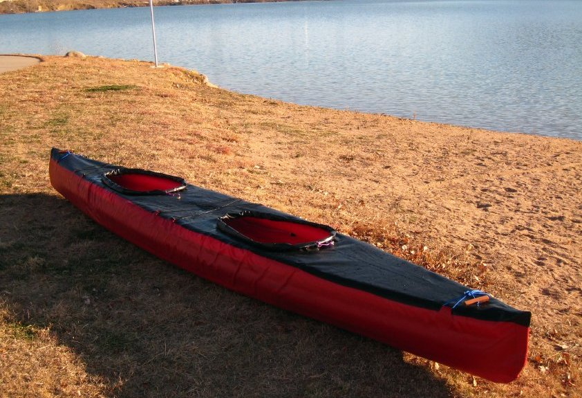

| Sonnet Double (15.5/6) by Tom Yost (US) | Menu Last Page Next Page |
|

The 15.5ft X 26in X 500lbs displacement "Sonnet Double" uses 6 Folbot Greenland II 15' sponsons. At 35lbs, the Sonnet Double is easy to carry or load on car racks. In addition to it's use as a 500+lb displacement folding double, it's compact size and light weight make it easy to paddle as a single. It can be built as a dedicated double with two coamings , a single with one center coaming, or with three smaller coaming's or a single large washboard coaming for both single and double use. It paddles well as a single from the aft coaming, though better balance can be achieved with a more center paddling position. The smaller Sonnet 14/6 is the singles version of this design. Offsets for both 6 sponson designs can be found at the Inflatable Kayak Builders Manual / Main Menu.
|
|